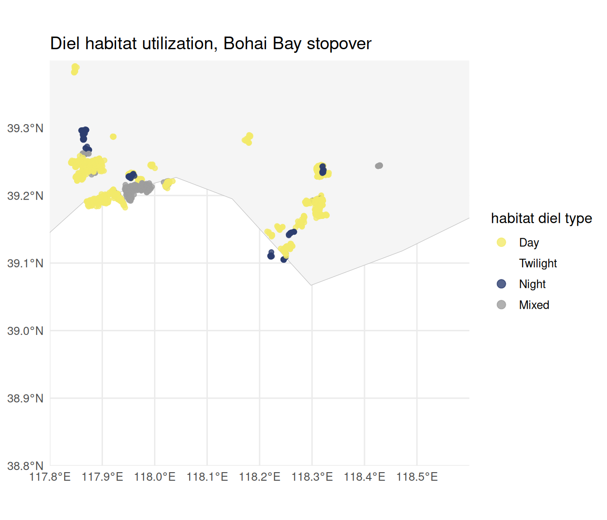
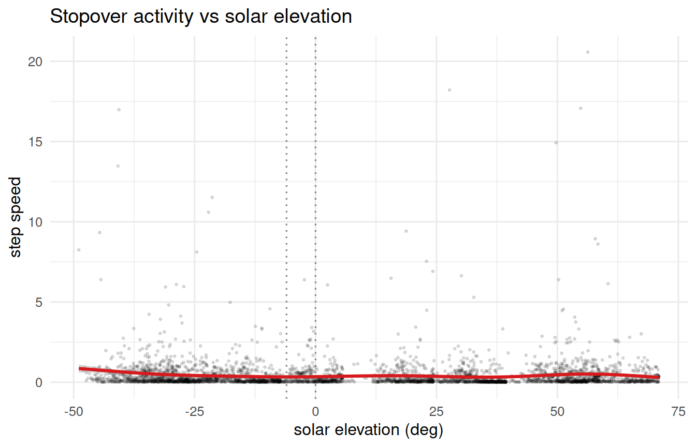
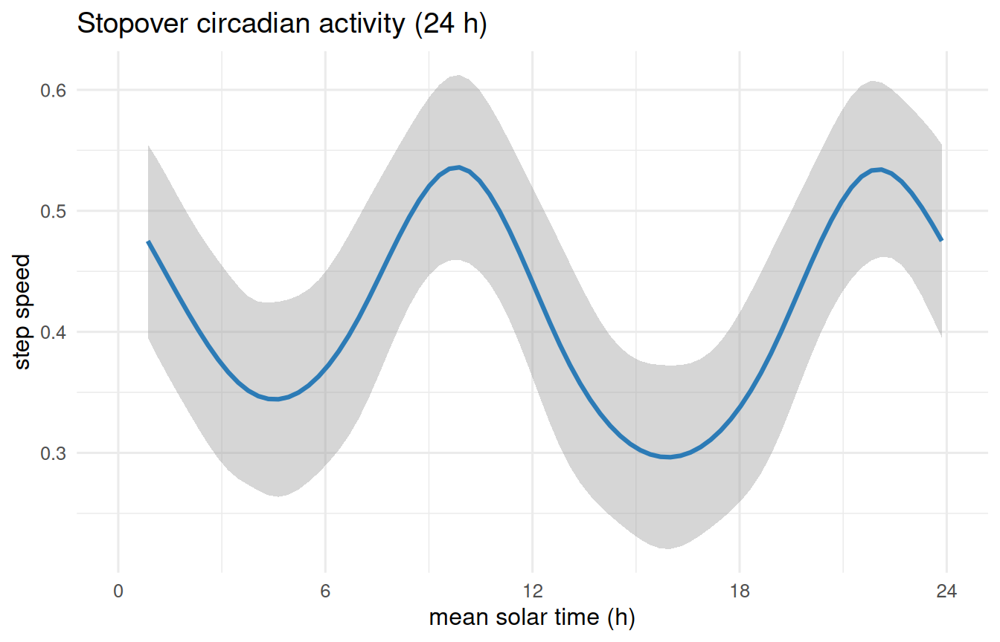

library(movepp)
library(sf)
#> Linking to GEOS 3.12.1, GDAL 3.8.4, PROJ 9.4.0; sf_use_s2() is TRUE
library(ggplot2)
data("godwit_demo")
godwit <- compute_step_speed(godwit_demo, time_col = "time",
individual_col = "individual", direction = "centered")
seg <- balm_segmentation(godwit, variable_col = "step_speed",
individual_col = "individual", verbose = FALSE)
stationary <- seg[!is.na(seg$cluster_type) & seg$cluster_type %in% c("LL", "LH"), ]
p <- detect_habitat_params(stationary, track = seg,
individual_col = "individual", time_col = "time")
#> eps = 0.656 km (migratory; 0.95-quantile of 2-comp GMM; flight/eps gap 306x)
#> minPts = 15 (~1.88 d min residence at 3.0 h sampling; knee)
hab <- dbscan_habitats(stationary, individual_col = "individual",
eps = p$eps, minPts = p$minPts)
mpi <- compute_mpi(hab, individual_col = "individual",
time_col = "time", verbose = FALSE)
phs <- classify_phases(mpi, n_phases = 3, individual_col = "individual")
#> [classify_phases] 3 phase(s); peaks {0.035, 0.635, 0.964}; cut(s) {0.220, 0.846}; sizes {19963, 18973, 8016}; mean MPI {0.042, 0.615, 0.960}Overview
compute_solar_elevation() and classify_circadian() partition tracking fixes by solar elevation angle into day / twilight / night. This vignette goes one step further than a per-fix label: it asks how each temporary habitat is used over the diel cycle, by voting the fixes within every habitat into a single diel type (Day / Twilight / Night, or Mixed when no period exceeds 50%).
We demonstrate this on the stopover habitats of the godwit’s spring/autumn passage through the Bohai Bay region (Yellow Sea), one of the most important refuelling areas on the East Asian–Australasian Flyway. Restricting to a single staging region keeps the diel-use map legible and shows how roosting (night) and foraging (day) sites separate spatially within one stopover.
Setup
We first rebuild the meso-scale phase classification exactly as in vignette("v04-mpi-phases"), then keep the Stopover fixes inside the Bohai Bay bounding box.
Restrict to the Stopover phase within the Bohai Bay box (117.8–118.6 °E, 38.8–39.4 °N):
co <- sf::st_coordinates(phs); phs$lon <- co[, 1]; phs$lat <- co[, 2]
bohai <- phs[!is.na(phs$phase) & phs$phase == "Stopover" &
phs$lon >= 117.8 & phs$lon <= 118.6 &
phs$lat >= 38.8 & phs$lat <= 39.4, ]
c(stopover_fixes = nrow(bohai),
habitats = length(unique(bohai$cluster_id)))
#> stopover_fixes habitats
#> 3763 33Compute solar elevation and classify the diel period
bohai <- compute_solar_elevation(bohai, time_col = "time")
#> [compute_solar_elevation] Computing for 3763 points...
#> [compute_solar_elevation] Done. Range: -48.9 to 71.0 deg
bohai <- classify_circadian(bohai, verbose = FALSE)
table(bohai$circadian, useNA = "ifany")
#>
#> Day Twilight Night
#> 2108 174 1481Defaults follow the standard civil-twilight definition:
- Day: elevation > 0 deg
- Twilight: -6 < elevation <= 0 deg
- Night: elevation <= -6 deg
Override via day_threshold / twilight_threshold for a stricter cut (e.g. astronomical twilight at -18 deg).
Diel typing of each habitat
Each temporary habitat is classified by the majority diel period of its fixes: the dominant period wins if it holds >50% of the fixes, otherwise the habitat is labelled Mixed.
bohai <- classify_habitat_circadian(bohai, individual_col = "individual",
cluster_col = "cluster_id", verbose = FALSE)
table(bohai$habitat_circadian, useNA = "ifany")
#>
#> Day Twilight Night Mixed
#> 3156 0 204 403A one-row-per-habitat summary of the diel split and resulting type:
hab_tab <- attr(bohai, "habitat_circadian")
hab_tab <- hab_tab[order(hab_tab$type, -hab_tab$n), ]
print(hab_tab, row.names = FALSE)
#> individual cluster_id n prop_Day prop_Twilight prop_Night
#> Black-tailed Godwit 23_16 27 671 0.526 0.042 0.432
#> Black-tailed Godwit 23_22 65 416 0.613 0.007 0.380
#> Black-tailed Godwit 23_16 2 351 0.632 0.060 0.308
#> Black-tailed Godwit 23_22 31 338 0.592 0.044 0.364
#> Black-tailed Godwit 23_22 22 334 0.584 0.030 0.386
#> Black-tailed Godwit 23_16 3 147 0.524 0.109 0.367
#> Black-tailed Godwit 23_16 61 113 0.504 0.000 0.496
#> Black-tailed Godwit 23_16 1 111 0.523 0.000 0.477
#> Black-tailed Godwit 23_08 15 108 0.546 0.046 0.407
#> Black-tailed Godwit 23_22 90 79 0.924 0.013 0.063
#> Black-tailed Godwit 23_08 20 62 0.613 0.000 0.387
#> Black-tailed Godwit 23_02 70 57 0.509 0.140 0.351
#> Black-tailed Godwit 23_21 49 55 0.618 0.000 0.382
#> Black-tailed Godwit 23_16 62 44 0.614 0.023 0.364
#> Black-tailed Godwit 23_21 63 39 0.846 0.000 0.154
#> Black-tailed Godwit 23_16 34 33 0.606 0.000 0.394
#> Black-tailed Godwit 23_16 86 27 0.667 0.000 0.333
#> Black-tailed Godwit 23_16 60 23 0.522 0.000 0.478
#> Black-tailed Godwit 23_22 64 23 0.565 0.000 0.435
#> Black-tailed Godwit 23_21 62 21 0.571 0.000 0.429
#> Black-tailed Godwit 23_22 41 21 0.619 0.000 0.381
#> Black-tailed Godwit 23_16 35 19 0.579 0.000 0.421
#> Black-tailed Godwit 23_02 68 17 0.647 0.353 0.000
#> Black-tailed Godwit 23_08 33 16 0.562 0.062 0.375
#> Black-tailed Godwit 23_11 52 16 0.688 0.000 0.312
#> Black-tailed Godwit 23_02 69 15 0.533 0.000 0.467
#> Black-tailed Godwit 23_11 1 169 0.426 0.095 0.479
#> Black-tailed Godwit 23_11 2 73 0.493 0.301 0.205
#> Black-tailed Godwit 23_16 4 61 0.393 0.115 0.492
#> Black-tailed Godwit 23_11 88 32 0.406 0.094 0.500
#> Black-tailed Godwit 23_11 3 20 0.450 0.200 0.350
#> Black-tailed Godwit 23_22 89 17 0.471 0.118 0.412
#> Black-tailed Godwit 23_11 50 16 0.500 0.000 0.500
#> Black-tailed Godwit 23_11 89 15 0.467 0.133 0.400
#> Black-tailed Godwit 23_16 59 68 0.485 0.000 0.515
#> Black-tailed Godwit 23_21 50 28 0.429 0.000 0.571
#> Black-tailed Godwit 23_16 90 20 0.400 0.000 0.600
#> Black-tailed Godwit 23_22 19 20 0.350 0.100 0.550
#> Black-tailed Godwit 23_22 21 19 0.316 0.000 0.684
#> Black-tailed Godwit 23_16 63 18 0.389 0.000 0.611
#> Black-tailed Godwit 23_16 66 16 0.312 0.000 0.688
#> Black-tailed Godwit 23_22 20 15 0.333 0.067 0.600
#> type
#> Day
#> Day
#> Day
#> Day
#> Day
#> Day
#> Day
#> Day
#> Day
#> Day
#> Day
#> Day
#> Day
#> Day
#> Day
#> Day
#> Day
#> Day
#> Day
#> Day
#> Day
#> Day
#> Day
#> Day
#> Day
#> Day
#> Mixed
#> Mixed
#> Mixed
#> Mixed
#> Mixed
#> Mixed
#> Mixed
#> Mixed
#> Night
#> Night
#> Night
#> Night
#> Night
#> Night
#> Night
#> NightMap: diel habitat utilization in Bohai Bay
Each fix is coloured by the diel type of the habitat it belongs to, over the Bohai Bay coastline. Night-typed (roosting) and day-typed (foraging) habitats occupy distinct locations within the single stopover region.
world <- rnaturalearth::ne_countries(scale = "medium", returnclass = "sf")
type_pal <- c(Night = "#2C3E70", Twilight = "#E9A23B",
Day = "#F2E96B", Mixed = "#9E9E9E")
ggplot() +
geom_sf(data = world, fill = "grey96", colour = "grey75", linewidth = 0.2) +
geom_sf(data = bohai, aes(colour = habitat_circadian), size = 1.6, alpha = 0.8) +
scale_colour_manual(values = type_pal, name = "habitat diel type",
drop = FALSE, na.translate = FALSE) +
coord_sf(xlim = c(117.8, 118.6), ylim = c(38.8, 39.4), expand = FALSE) +
guides(colour = guide_legend(override.aes = list(size = 3))) +
labs(x = NULL, y = NULL,
title = "Diel habitat utilization, Bohai Bay stopover") +
theme_minimal(base_size = 12)
Activity across the diel cycle
Step speed against solar elevation shows when the bird is active; the dotted lines mark the twilight (-6 deg) and day (0 deg) thresholds.
ggplot(bohai, aes(solar_elevation, step_speed)) +
geom_point(alpha = 0.12, size = 0.5) +
geom_smooth(method = "gam", formula = y ~ s(x), colour = "#D7191C") +
geom_vline(xintercept = c(-6, 0), linetype = "dotted", colour = "grey50") +
labs(x = "solar elevation (deg)", y = "step speed",
title = "Stopover activity vs solar elevation") +
theme_minimal(base_size = 12)
A 24-hour rhythm in mean solar time (UTC hour + lon / 15), with a cyclic spline so the curve joins at 0/24 h:
utc <- as.POSIXct(format(bohai$time, tz = "UTC"), tz = "UTC")
bohai$solar_hour <- ((as.numeric(format(utc, "%H")) +
as.numeric(format(utc, "%M")) / 60) + bohai$lon / 15) %% 24
ggplot(bohai, aes(solar_hour, step_speed)) +
geom_smooth(method = "gam", formula = y ~ s(x, bs = "cc"), colour = "#2C7BB6") +
scale_x_continuous(breaks = seq(0, 24, 6), limits = c(0, 24)) +
labs(x = "mean solar time (h)", y = "step speed",
title = "Stopover circadian activity (24 h)") +
theme_minimal(base_size = 12)
See also
-
vignette("v04-mpi-phases")— the upstream phase classification -
vignette("v06-isfi")— stratifying site fidelity by phase
sessionInfo()
#> R version 4.6.0 (2026-04-24)
#> Platform: x86_64-pc-linux-gnu
#> Running under: Ubuntu 24.04.4 LTS
#>
#> Matrix products: default
#> BLAS: /usr/lib/x86_64-linux-gnu/openblas-pthread/libblas.so.3
#> LAPACK: /usr/lib/x86_64-linux-gnu/openblas-pthread/libopenblasp-r0.3.26.so; LAPACK version 3.12.0
#>
#> locale:
#> [1] LC_CTYPE=C.UTF-8 LC_NUMERIC=C LC_TIME=C.UTF-8
#> [4] LC_COLLATE=C.UTF-8 LC_MONETARY=C.UTF-8 LC_MESSAGES=C.UTF-8
#> [7] LC_PAPER=C.UTF-8 LC_NAME=C LC_ADDRESS=C
#> [10] LC_TELEPHONE=C LC_MEASUREMENT=C.UTF-8 LC_IDENTIFICATION=C
#>
#> time zone: UTC
#> tzcode source: system (glibc)
#>
#> attached base packages:
#> [1] stats graphics grDevices utils datasets methods base
#>
#> other attached packages:
#> [1] ggplot2_4.0.3 sf_1.1-1 movepp_0.1.4
#>
#> loaded via a namespace (and not attached):
#> [1] s2_1.1.11 generics_0.1.4 class_7.3-23
#> [4] KernSmooth_2.23-26 lattice_0.22-9 digest_0.6.39
#> [7] magrittr_2.0.5 evaluate_1.0.5 grid_4.6.0
#> [10] timechange_0.4.0 RColorBrewer_1.1-3 rnaturalearth_1.2.0
#> [13] fastmap_1.2.0 Matrix_1.7-5 jsonlite_2.0.0
#> [16] e1071_1.7-17 DBI_1.3.0 mclust_6.1.2
#> [19] mgcv_1.9-4 scales_1.4.0 cli_3.6.6
#> [22] rlang_1.2.0 units_1.0-1 splines_4.6.0
#> [25] withr_3.0.2 yaml_2.3.12 otel_0.2.0
#> [28] tools_4.6.0 dplyr_1.2.1 vctrs_0.7.3
#> [31] R6_2.6.1 proxy_0.4-29 lifecycle_1.0.5
#> [34] lubridate_1.9.5 classInt_0.4-11 dbscan_1.2.5
#> [37] pkgconfig_2.0.3 pillar_1.11.1 gtable_0.3.6
#> [40] glue_1.8.1 data.table_1.18.4 Rcpp_1.1.1-1.1
#> [43] rnaturalearthdata_1.0.0 xfun_0.58 tibble_3.3.1
#> [46] tidyselect_1.2.1 knitr_1.51 farver_2.1.2
#> [49] nlme_3.1-169 htmltools_0.5.9 labeling_0.4.3
#> [52] rmarkdown_2.31 suncalc_0.5.1 wk_0.9.5
#> [55] compiler_4.6.0 S7_0.2.2